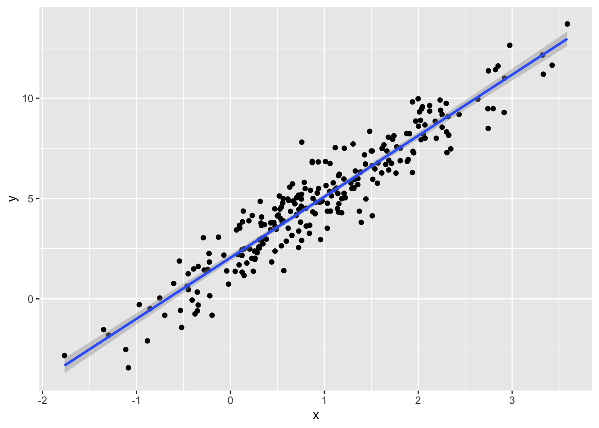
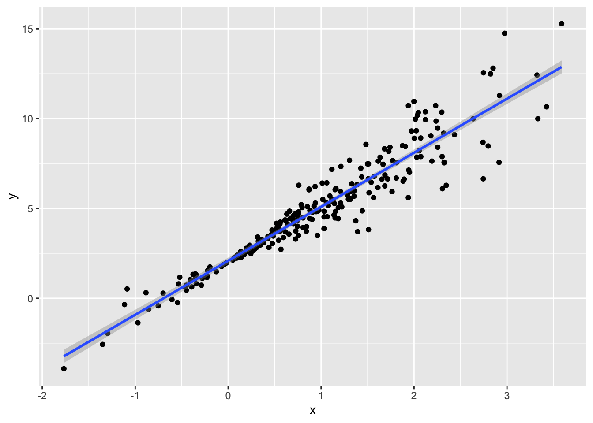
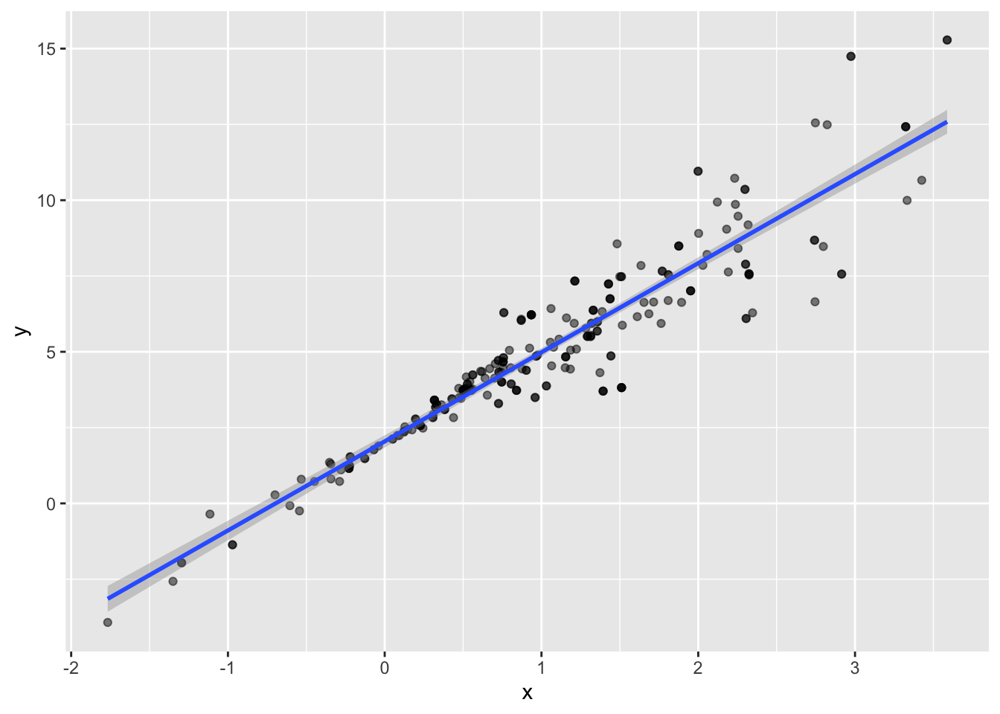
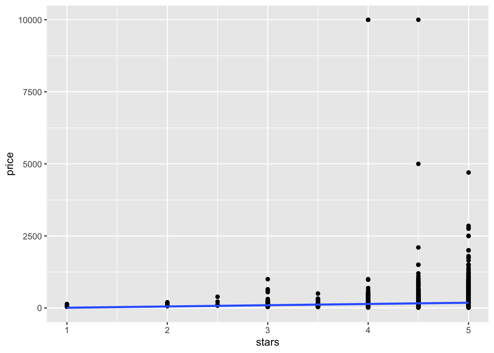
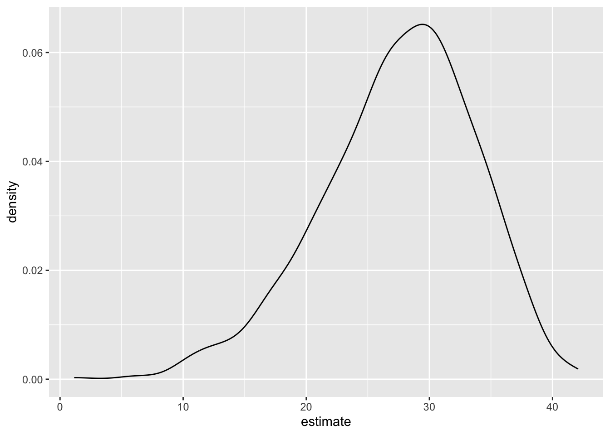

Repeated Sampling - it would be great if we could draw multiple samples from the same population, but that never really happens - what we end up doing is splitting our sample into multiple samples
Bootstrapping - your sample is drawn at random from the population - draw a sample with replacement
Why Bootstrapping? - we want to prove that all of our assumptions are met in order to use the “known” distribution
let’s make up some data
n_samp = 250
sim_df_constant =
tibble(
x = rnorm(n_samp, 1, 1),
error = rnorm(n_samp, 0, 1),
y = 2 + 3 * x + error
)
sim_df_nonconstant =
sim_df_constant |>
mutate(
error = error * 0.75 * x,
y = 2 + 3 * x + error
)Let’s look at these.
sim_df_constant |>
ggplot(aes(x = x, y =y)) +
geom_point() +
stat_smooth(method = "lm")## `geom_smooth()` using formula = 'y ~ x'
sim_df_nonconstant |>
ggplot(aes(x = x, y =y)) +
geom_point() +
stat_smooth(method = "lm")## `geom_smooth()` using formula = 'y ~ x'
Look at regression results.
sim_df_constant |>
lm(y ~ x, data = _) |>
broom::tidy() |>
knitr::kable(digits = 3)| term | estimate | std.error | statistic | p.value |
|---|---|---|---|---|
| (Intercept) | 2.048 | 0.090 | 22.794 | 0 |
| x | 3.042 | 0.066 | 45.824 | 0 |
sim_df_nonconstant |>
lm(y ~ x, data = _) |>
broom::tidy() |>
knitr::kable(digits = 3)| term | estimate | std.error | statistic | p.value |
|---|---|---|---|---|
| (Intercept) | 2.085 | 0.088 | 23.668 | 0 |
| x | 3.007 | 0.065 | 46.197 | 0 |
boot_samp = function(df) {
boot_df = sample_frac(df, replace = TRUE) |>
arrange(x)
return(boot_df)
}Let’s run it!
sim_df_nonconstant |>
boot_samp() |>
ggplot(aes(x =x, y =y)) +
geom_point(alpha = 0.5) +
stat_smooth(method = "lm")## `geom_smooth()` using formula = 'y ~ x'
Can we do this as part of an anlaysis.
sim_df_nonconstant |>
boot_samp() |>
lm(y ~ x, data = _) |>
broom::tidy() |>
knitr::kable(digits = 3)| term | estimate | std.error | statistic | p.value |
|---|---|---|---|---|
| (Intercept) | 2.254 | 0.103 | 21.793 | 0 |
| x | 2.819 | 0.074 | 38.183 | 0 |
boot_straps =
tibble(
strap_n = 1:1000
) |>
mutate(
strap_samp = map(strap_n, \(i) boot_samp(df = sim_df_nonconstant)),
models = map(strap_samp, \(df) lm(y ~ x, data = df)),
results = map(models, broom::tidy)
)
boot_strap_results =
boot_straps |>
select(strap_n, results) |>
unnest(results) |>
group_by(term) |>
summarize(boot_se = sd(estimate)) |>
knitr::kable()boot_straps =
sim_df_nonconstant |>
modelr::bootstrap(1000) |>
mutate(
strap = map(strap, as.tibble),
models = map(strap, \(df) lm(y ~ x , data = df)),
results = map(models, broom::tidy)
) |>
select(.id, results) |>
unnest(results)## Warning: There was 1 warning in `mutate()`.
## ℹ In argument: `strap = map(strap, as.tibble)`.
## Caused by warning:
## ! `as.tibble()` was deprecated in tibble 2.0.0.
## ℹ Please use `as_tibble()` instead.
## ℹ The signature and semantics have changed, see `?as_tibble`.
## ℹ The deprecated feature was likely used in the purrr package.
## Please report the issue at <https://github.com/tidyverse/purrr/issues>.data("nyc_airbnb")
manhattan_df =
nyc_airbnb |>
mutate(stars = review_scores_location / 2) |>
rename(
borough = neighbourhood_group,
neighborhood = neighbourhood) |>
filter(borough == "Manhattan") |>
drop_na(price, stars) |>
select(price, stars, room_type)Plot the data
manhattan_df |>
ggplot(aes(x = stars, y = price)) +
geom_point() +
stat_smooth(method = "lm", se = FALSE)## `geom_smooth()` using formula = 'y ~ x'
fit a regression
manhattan_df |>
modelr::bootstrap(1000) |>
mutate(
strap = map(strap, as.tibble),
models = map(strap, \(df) lm(price ~ stars + room_type, data = df)),
results = map(models, broom::tidy)
) |>
select(.id, results) |>
unnest(results) |>
filter(term == "stars") |>
ggplot(aes(x = estimate)) +
geom_density()